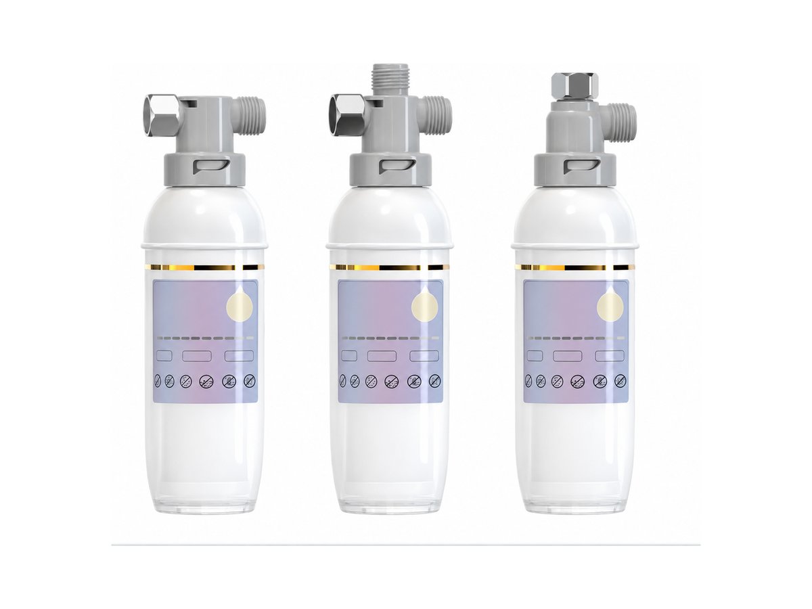

Douche
DoucheRP-S01
Filtre de douche à main
SKU: RP-S01
MOQ : à confirmer lors de la demande
Accueil/Produits/Filtres de douche/ RP-S14

Filtres de douche
Système de filtration pour douche (JK-S2) — unité simple ou multi-unités
RP-S14 et RP-S13 sont le même système de filtration pour douche avec des spécifications identiques. RP-S14 est l’unité simple ; RP-S13 est l’ensemble multi-unités. Les spécifications sont confirmées par modèle et par commande.
Unité simple ou multi-unités — coter aussi commeRP-S13 (ensemble multi-unités).
La tension / fréquence est configurable selon le pays de destination. Les autres configurations sont confirmées par commande.
RP-S14 est un système de filtration pour douche (JK-S2) vendu en unité simple ou en ensemble multi-unités. RP-S14 est l’unité simple et RP-S13 est l’ensemble multi-unités, et les deux ont des spécifications identiques : débit nominal de 8 L/min, précision de filtration de 40 µm, volume nominal d’eau de 12000 L, température de l’eau de 5 à 50°C et pression de service de 0,1 à 0,4 MPa. Les options de cartouche sont PP, PP + sulfite de calcium ou bloc de carbone. Le schéma de raccordement et les dimensions sont confirmés par commande.
Quelle est la quantité minimale de commande ?
La première commande est de 200 unités par modèle, et les réassorts sont de 500 unités.
Puis-je commander un échantillon avant une commande en volume ?
Oui. Les échantillons sont prêts en 15 jours, et les frais d'échantillon sont remboursés sur votre première commande en gros. Les commandes en gros prennent 40 jours après approbation de l'échantillon et sont expédiées FOB Shenzhen.
Dois-je choisir l’unité simple ou l’ensemble multi-unités ?
RP-S14 est l’unité simple et RP-S13 est l’ensemble multi-unités. Les deux ont des spécifications identiques, choisissez donc selon le nombre d’unités dont vous avez besoin.
Survolez l'image d'une variante pour voir ses spécifications. Sur écran tactile, touchez une image.

7 lignes de spécifications du catalogue ROPureOEM.
| Spécification | RP-S14-1 — unité simple (JK-S2) | RP-S14-2 — ensemble multi-unités (JK-S1) |
|---|---|---|
| Débit nominal | 8 L/min | 8 L/min |
| Précision de filtration | 40 µm | 40 µm |
| Température de l’eau | 5-50°C | 5-50°C |
| Pression de service | 0.1-0.4 MPa | 0.1-0.4 MPa |
| Volume nominal d’eau | 12000 L | 12000 L |
| Options de cartouche | PP / PP + sulfite de calcium / bloc de carbone | PP / PP + sulfite de calcium / bloc de carbone |
| Schéma de raccordement / dimensions | Confirmé par commande | Confirmé par commande |
Les spécifications sont tirées du catalogue ROPureOEM. Lorsqu'une valeur n'est pas encore confirmée, elle est indiquée comme « Confirmé par commande » — nous ne publions pas de chiffres non confirmés.
DoucheFiltre de douche à main
SKU: RP-S01
MOQ : à confirmer lors de la demande
 Douche
DoucheFiltre de douche rectangulaire
SKU: RP-S03
MOQ : à confirmer lors de la demande
 Douche
DoucheFiltre de douche multimode — quatre modèles
SKU: RP-S07
MOQ : à confirmer lors de la demande
 Douche
DoucheFiltre de douche portable
SKU: RP-S10
MOQ : à confirmer lors de la demande